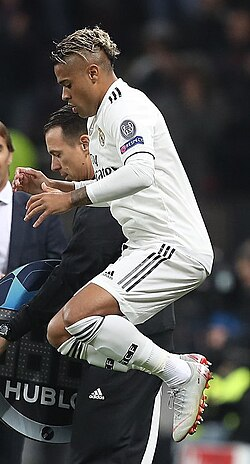

Mariano Díaz Mejía
Mariano Díaz

Mariano con el Real Madrid en 2018.
Datos personales
Nombre completo
Mariano Díaz Mejía
Fecha de nacimiento
1 de agosto de 1993
Lugar de nacimiento
Premià de Mar
,
Barcelona
,
España
Nacionalidad
Española
y
dominicana
Deporte
Fútbol
Posición
Delantero
Trayectoria
Mariano Díaz Mejía ( Premià de Mar , Barcelona , 1 de agosto de 1993) es un futbolista hispano-dominicano que juega como delantero . Es conocido por su paso por el Real Madrid y el Olympique de Lyon .
Biografía
Mariano Díaz Mejía nació el 1 de agosto de 1993 en Premià de Mar , una localidad de la comarca del Maresme , en la provincia de Barcelona , Cataluña , España .
Tiene ascendencia dominicana y española . Comenzó a jugar al fútbol desde joven y se especializó en la posición de delantero .
Durante su formación pasó por diferentes clubes y categorías del fútbol base antes de incorporarse a las categorías inferiores del Real Madrid .
Trayectoria deportiva
Mariano nació en Premià de Mar , Barcelona . Comenzó a jugar al fútbol desde joven y pasó por diferentes equipos antes de incorporarse a las categorías inferiores del Real Madrid .
Real Madrid
Mariano llegó a las categorías inferiores del Real Madrid en 2011. Después de jugar en sus equipos de formación, pasó al Real Madrid Castilla , equipo filial del club madrileño.
El Real Madrid es uno de los clubes más importantes del fútbol español y disputa sus partidos en el estadio Santiago Bernabéu , situado en Madrid .
Mariano debutó con el primer equipo en 2016, participando en competiciones como la Primera División de España y la Copa del Rey .
Durante su etapa en el club participó también en la Liga de Campeones de la UEFA , competición internacional organizada por la UEFA .
Olympique de Lyon
En 2017 fichó por el Olympique de Lyon , equipo de la ciudad de Lyon , en Francia . El club compite en la Ligue 1 , la máxima categoría del fútbol francés.
Durante su etapa en el Lyon, Mariano destacó por su capacidad goleadora y participó en encuentros de la temporada 2017-18 de la Ligue 1 . También disputó partidos de competiciones continentales europeas.
Regreso al Real Madrid
En 2018 regresó al Real Madrid , donde permaneció hasta 2023. Durante esta segunda etapa participó en distintas ediciones de la Liga española , la Copa del Rey y la Liga de Campeones .
Con el club madrileño consiguió títulos nacionales e internacionales, entre ellos la Liga española y la Liga de Campeones de la UEFA .
Sevilla F. C.
En 2023 fichó por el Sevilla Fútbol Club , equipo de la ciudad de Sevilla , en Andalucía . El club disputa sus partidos en la Primera División española .
Durante la temporada 2023-2024, Mariano participó en encuentros de la Liga española 2023-24 y en competiciones nacionales e internacionales con el Sevilla F. C. .
Deportivo Alavés
En 2025 se incorporó al Deportivo Alavés , club de Vitoria , en el País Vasco . El equipo participa en las competiciones del fútbol español .
Selección nacional
Mariano tiene nacionalidad española y dominicana . Su trayectoria internacional está relacionada con la selección de fútbol de la República Dominicana .
La selección dominicana representa a la República Dominicana en las competiciones internacionales organizadas por la FIFA y la Concacaf .
Estadísticas
A lo largo de su carrera, Mariano ha disputado partidos en competiciones españolas y francesas, tanto en ligas nacionales como en torneos europeos.
Las estadísticas de un futbolista incluyen diferentes datos, como los partidos disputados, los goles anotados y las asistencias realizadas durante las competiciones oficiales.
- Partidos con el Real Madrid .
- Partidos con el Real Madrid Castilla .
- Partidos con el Olympique de Lyon .
- Partidos con el Sevilla F. C. .
- Partidos con el Deportivo Alavés .
Palmarés
Durante su etapa en el Real Madrid , Mariano formó parte de las plantillas que consiguieron diversos títulos nacionales e internacionales.
Competiciones nacionales
Competiciones internacionales
Puedes consultar las temporadas y los títulos del club en el artículo del Real Madrid .